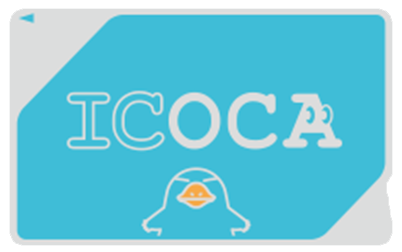
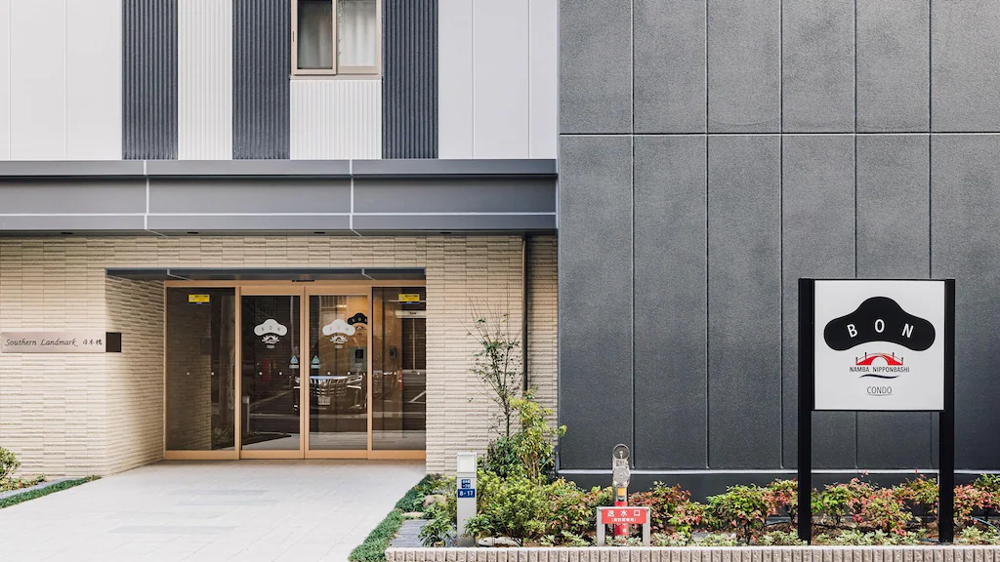
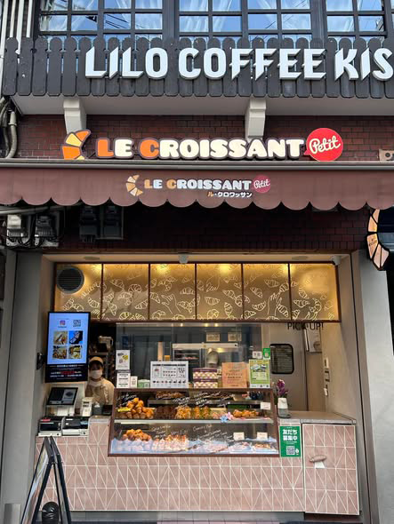

14:00
抵達關西機場
交通：搭乘南海電鐵「特急 Rapi:t」或「機場急行」
- 1. 購買 ICOCA 卡

- 2. 兌換神戶用 JR PASS
- 3. 抵達「南海難波站」後，請跟隨指標往 「北出口 (North Exit)」 方向。利用電梯下到 1 樓，出站後往 「難波地下街 (Namba Walk)」 走。沿著地下街往「日本橋站」方向前行（這段地下街全平路，拖行李很方便）。最重要： 尋找 「B15 出口」或「E9 出口」。B15 出口 有電梯可以直達地面。E9 出口 則非常靠近民宿（大約走 2 分鐘）
16:00
住宿 Check-in (BON 公寓)

整理行李、洗把臉準備出發。
1.入住前:大門進入密碼： 用來打開公寓 1 樓大門。入住碼 (Check-in Code)： 這是一串數字，不是 Agoda 的訂單編號。
2.當天辦理入住步驟（進入大樓： 在 1 樓大門輸入郵件裡的密碼進入。操作平板： 櫃檯位置會放有幾台 平板電腦。輸入資訊： 輸入郵件中的「入住碼」。掃描護照： 根據指示，將 5 位入住大人的護照一一放在平板鏡頭前掃描（這是日本法律規定，一定要做）。領取房間密碼： 手續完成後，平板螢幕會顯示你的 「房間號碼」 與 「房間電子鎖密碼」。
💡 強烈建議： 用手機把這組號碼拍下來，全家人都要存一份，避免忘記。
💡 強烈建議： 用手機把這組號碼拍下來，全家人都要存一份，避免忘記。
16:30
道頓堀逛逛
步行約 10 分鐘
跑跑固力果拍照、吃章魚燒小吃。
17:30
晚餐時間 (3選1)
北極星蛋包飯：
傳言是日本蛋包飯創始店，百年歷史名氣響亮，店家生意極好，無時無刻都高朋滿座。
拉麵 Hayashida (らぁ麺 はやし田 道頓堀店)：
這間店就在道頓堀最熱鬧的區域（靠近格力高廣告牌），位於地下一樓。雖然它是東京來的名店，但其「高質感」的路線非常符合不喜歡死鹹口味的觀光客。必點推薦：雖然最有名的是醬油拉麵，但他們的雞肉基底湯頭非常細緻，使用全雞與鴨肉熬煮，油脂清香而不膩。
神座拉麵：
這家拉麵被譽為「關西第一名」，湯頭與一般濃郁的豚骨不同，主打清甜的蔬菜醬油基底。必點推薦：叉燒溏心蛋拉麵：湯頭加入大量大白菜，口感像蔬菜湯一樣甘甜好喝，非常適合不喜歡太重鹹的旅人
18:50
Le Croissant Shinsaibashi 心齋橋小可頌

Le Croissant Shinsaibashi, 2 Chome-7-25 Shinsaibashisuji, Chuo Ward, Osaka, 542-0085日本
20:30關門，Youtuber力薦的好吃可頌，可當隔日早餐
19:00
Super Tamade 玉出超市 (日本橋店)
步行約 17 分鐘
晚上8-9點後熟食貼折扣貼紙(-20%~-50%)。買宵夜 + 明天早餐 + 飲料+明日京都行程身上的小點心
注意：不能拍照，帶現金，自備購物袋。
注意：不能拍照，帶現金，自備購物袋。
20:00
回到住宿
BON公寓難波日本橋